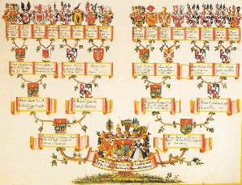

Борис Акунин
Мой календарь
Американцы сегодня чествуют «отцов-основателей», которые в 1620 году высадились в Новом Свете, а завтра в США будут отмечать День Корней, когда нужно вспоминать своих предков.
Допустим, до корабля «Мэйфлауэр» и его пассажиров вам дела нет, но идея восстановить семейную генеалогию очень правильная. Посвятите этому увлекательному занятию нынешний день. Вдруг увлечетесь и потом продолжите?
Про бабушек-дедушек знают все, с «пра» у многих уже начинаются проблемы, а о судьбе «пра-пра» в стране Россия с ее мглистой историей осведомлены - я у многих выяснял - только единицы. Семейная память у обитателей бывшего СССР, как правило, короткая. Кого-то лучше было не вспоминать, и люди уничтожали фотоснимки, выдумывали предкам «благонадежные биографии». Кто-то бесследно затерялся в хаосе Гражданской войны и последующих индустриализаций-коллективизаций.
Но следы найти можно - если поставить перед собой такую задачу. Я, например, в свое время докопался до прапрадеда тыща восемьсот двадцать какого-то года рождения (не бог весть что, но все-таки) и даже имею его фотокарточку - моя мать впервые увидела лицо своего прадеда.
Вас ждут интересные открытия, обещаю. Гены - штука неслучайная.
Если же туман прошлого окажется слишком плотен и не даст вам разглядеть в сумерках лица, похожие на ваше, выясните хотя бы происхождение вашей фамилии. Это совсем просто. Если же фамилия «скучная» - Иванов, Петров, Сидоренко - попытайтесь оживить Ивана-Петра-Сидора, имя которого унаследовала ваша семья. Придумайте его: лицо, характер, судьбу. Нарисуйте или сколлажируйте, поместите в рамку. И он станет для вас живым, вот увидите.